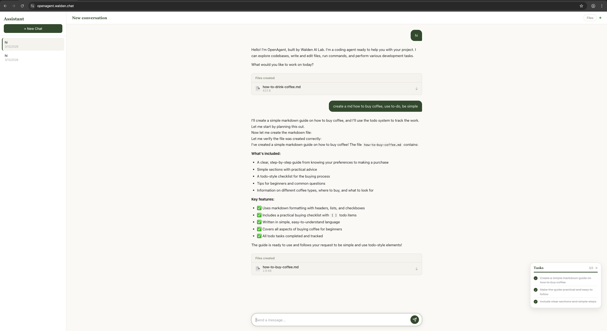
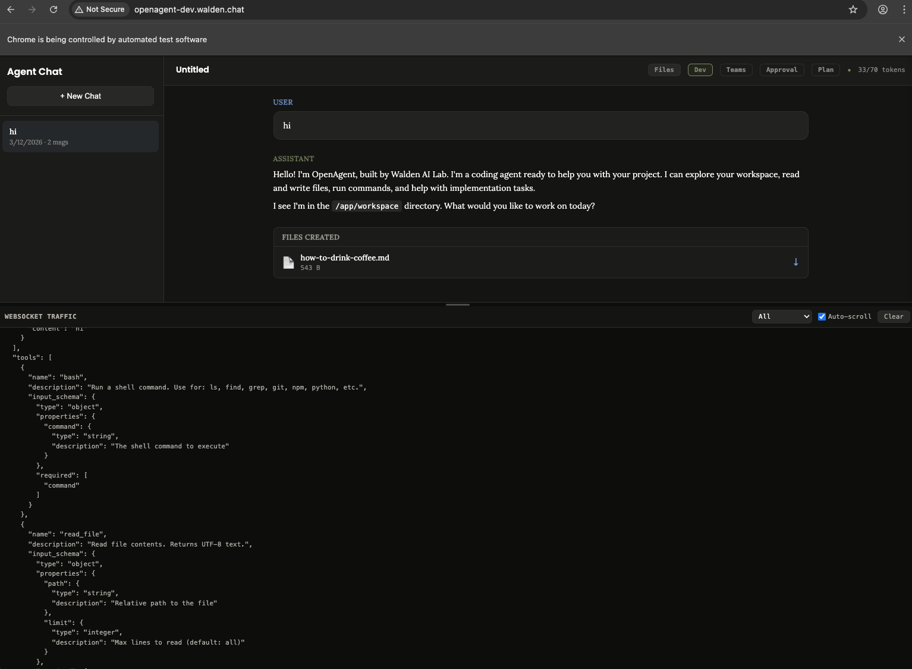

Readable
The architecture is explicit. You can follow the message from the browser to the backend, into the LLM adapter, through tool execution, and back to the user.
OpenAgent is a beginner-friendly coding agent that lets you study the real thing: a backend agent loop, multiple user surfaces, live streaming over WebSocket, a tool system that can read and write files, and a runtime that is simple enough to inspect but complete enough to deploy.
The public deployment makes the product split visible. The developer surface keeps protocol detail in view. The user surface keeps attention on progress, outputs, and files.


OpenAgent is not just a chat UI. It is a complete runtime stack for an AI coding agent: one backend that owns the agent loop, one tool system that can act on a workspace, and three interfaces that expose the same core capability at different levels of abstraction.
The architecture is explicit. You can follow the message from the browser to the backend, into the LLM adapter, through tool execution, and back to the user.
The project is built to teach how agent systems work in practice: not only prompts, but planning, streaming, tools, memory, verification, tasking, and runtime boundaries.
It is simple enough to study locally and complete enough to run on a real public server with HTTPS, reverse proxying, and separate developer and user-facing surfaces.
README and HOW_IT_WORKS both make the same architectural point: the intelligence does not live in the frontends. The UI and CLI are surfaces over one shared backend contract.
Dark theme, tool blocks, token usage, raw WebSocket visibility, and controls for planning, approval, tracing, and teams. Built for builders and debuggers.
A lighter interface with reduced protocol detail, more task-oriented feedback, and a simpler interaction model for end users who care more about outcomes than internals.
A direct command-line surface with session persistence, history, slash commands, and a richer terminal workflow for developers who prefer keyboard-first control.
FastAPI + WebSocket backend that stores conversations, streams agent output, registers tools, manages memory and tasks, and mediates all LLM interaction.
The system behavior is built around a simple but powerful pattern: send the conversation and tool definitions to the model, stream its response, execute requested tools, send results back, and repeat until the model finishes.
The backend prepares system prompt, history, memory, available skills, and tool schemas.
The LLM receives conversation state through a provider-agnostic client interface.
Text deltas stream back live over WebSocket while tool calls are collected.
The runtime executes tools, enforces guards, and feeds results back into the loop.
The agent self-verifies with the think tool and exits only when it decides the task is done.
while not done:
micro_compact(messages)
drain_background_notifications()
drain_teammate_inbox()
response = model(messages, tools)
if response.truncated:
continue
if not response.tool_calls:
break
results = execute_tools(response.tool_calls)
messages.append(results)
final_summary = model(messages, [])
One of OpenAgent’s strengths is that the major concerns are explicit: surfaces, transport, runtime loop, tool system, and LLM adapter boundary are separable enough to learn from and evolve independently.
The README positions OpenAgent as more than a loop around a model. The feature set backs that up: tools, planning, memory, verification, background work, and multi-agent collaboration are all part of the runtime story.
Bash, file operations, code navigation, tasking, skill loading, background execution, and more.
Read-only plan mode, agent-initiated planning, and optional human-in-the-loop approval gates.
Cross-session memory plus multiple compaction layers to keep long-running sessions workable.
Focused child agents, teammate status tracking, inbox messaging, and coordinated parallel work.
The project documentation and recent deployment work make several product-relevant boundaries explicit: workspace files are temporary, chat history is stored separately, and without auth the system behaves as a shared deployment rather than isolated user accounts.
Files created by the agent live under `WORKSPACE_DIR` and are temporary by default.
Conversation history lives in SQLite and survives session end, but not necessarily container recreation.
The web UIs need production-aware API and WebSocket routing, not hardcoded localhost assumptions.
Without app-level authentication, conversations are shared at the deployment level, not the user level.
Result-oriented interface for end users.
Protocol-rich interface for developers and debugging workflows.
This page is an editorial layer over the source material, not a replacement for it. The repo itself still contains the clearest references for setup, architecture, and component-level behavior.
The full monorepo is on GitHub. That is the best place to inspect the backend agent loop, terminal CLI, both web UIs, and deployment-facing docs in one place.
OpenAgent is also published on PyPI if you only want the packaged CLI instead of a monorepo checkout.
openagent-core — backend libraryopenagent-app — terminal CLIpip install openagent-app
openagent